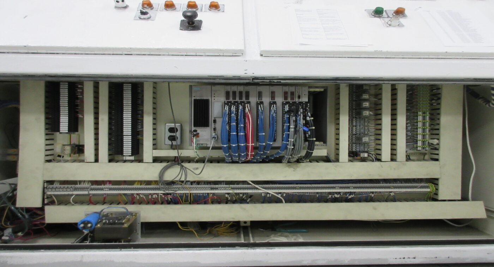

A vacuum-metallizing machine that aluminizes plastic headlamp reflectors for a leading automotive lighting manufacturer was running on an obsolete Siemens TI 545 PLC with an aging UniOP HMI. I migrated control to Allen-Bradley CompactLogix with a larger PanelView Plus 6 touchscreen, replicating the full multi-stage vacuum sequence with a 5-day commissioning window and no throughput loss.
The vacuum-chamber sequence — rough/fine vacuum, glow discharge, filament preheat, aluminum flashing/evaporation, plasil top-coat, and chamber vent — is monitored from a single PanelView screen showing live vacuum gauges and pump/valve states.
